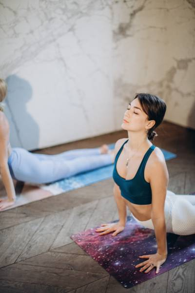

ブジャンガーサナ（コブラのポーズ）は、心を開く後屈のポーズで、上半身全体を伸ばし、背中の痛み、肩の緊張、上半身の痛みを和らげるのに役立ちます。
このポーズに入るときは、背中を痛めないようにゆっくりと動くようにしてください。スフィンクスポーズからこのポーズに入る場合は、肋骨を前に押し出すのを避けるべきです。代わりに、背中全体に均等に後屈が分散されるようにします。上背部は下背部よりも曲げにくいです。開くためには、背骨を伸ばして椎骨の間により多くのスペースを作ることを考えます。
ブジャンガーサナの手順:

太陽礼拝の途中であれば、膝、胸、あごからコブラのポーズに入ります。そうでない場合は、うつ伏せになって始めることができます。
- 両手のひらを肩の真下に置き、肘をまっすぐ後ろに曲げて体側に引き寄せます。
- 首を中立に保ち、マットをまっすぐ見下ろして一瞬止まります。恥骨を床に固定します。
- 息を吸いながら、胸を床から持ち上げます。肩を後ろに回し、下肋骨を床に保ちます。肘が体側に引き続き寄り添っていることを確認します。左右に広がらないようにします。
- 首を中立に保ちます。無理に持ち上げないでください。視線は床に向けます。
- 息を吐いて床に戻ります（または太陽礼拝をしている場合はダウンドッグ、アドホ・ムカ・シュヴァナーサナに戻ります）。
コブラのポーズは、手根管症候群や背中、腕、肩のけがをしている場合には行わないでください。また、最近腹部手術を受けた場合や妊娠している場合も避けてください。
下背部に負担を感じる場合は、ポーズを緩めて少し下げるか、前腕を休めるために下に降りてください。
このビデオガイドを通じて簡単な手順でコブラのポーズを試すこともできます: